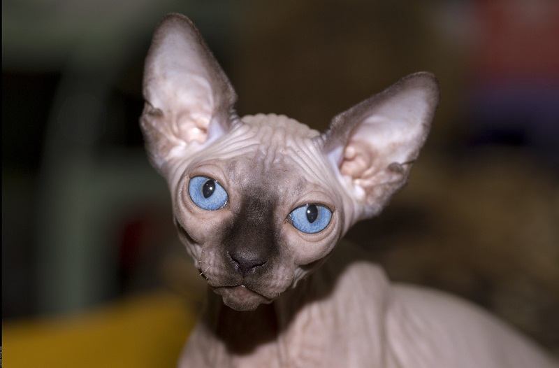
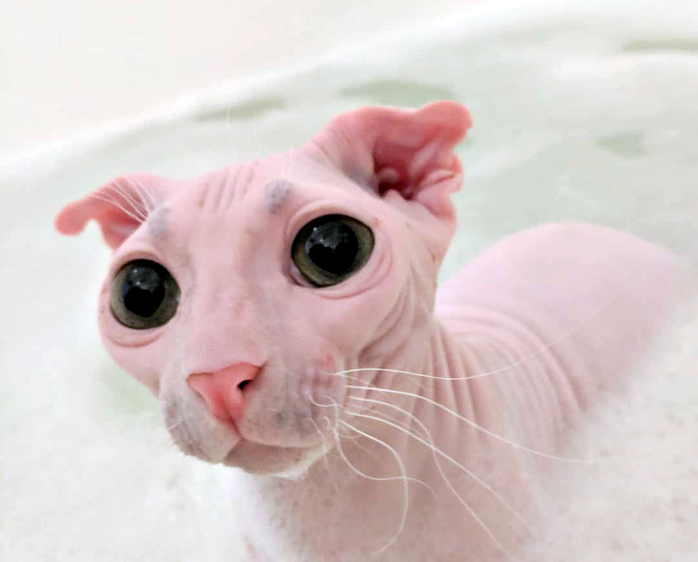
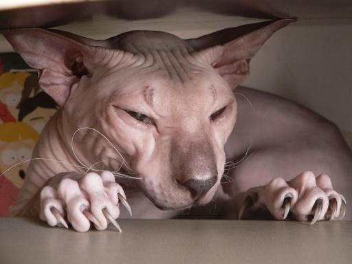
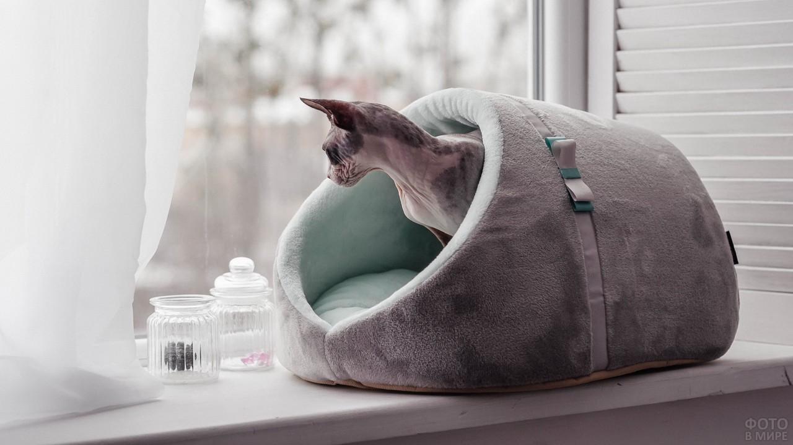
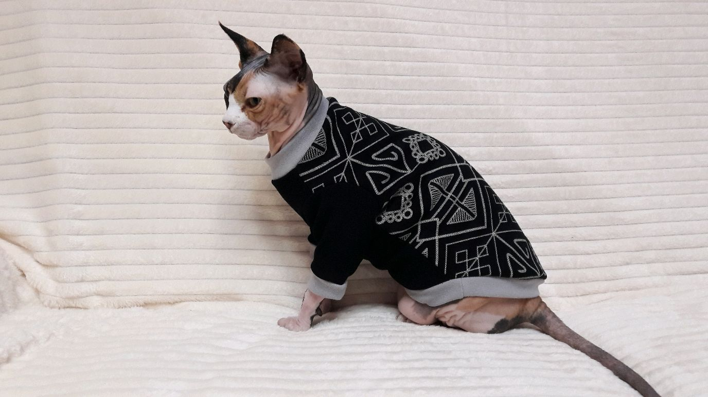

Уход за кошкой сфинксом
Очевидное отличие сфинксов от других кошек – полное или почти полное отсутствие шерсти. На первый взгляд это должно было сделать их удобными в уходе. Не нужно расчесывать питомца, давать мальт-пасту, шерсть не летает по всей квартире. На деле же ухаживать за сфинксом несколько сложнее, чем за обычным котом
Протирать глаза
Глаза сфинксов лишены естественной защиты в виде ресниц. Из-за этого их роговица усиленно омывается слезой. Слеза, смешанная с пылью, окисляется на воздухе и во внутреннем уголке глаза можно увидеть коричневое желе. Эти выделения нужно убирать влажным ватным диском каждый день.
Чистить уши
У голокожих сфинксов выделяется большое количество кожной смазки. И так же активно коричневый секрет образуется в ушных раковинах. У здоровой кошки темно-коричневые выделения не сопровождаются зудом или покраснением кожи. Их удаляют с помощью специального размягчающего лосьона и ватного диска.
Купать
Если сфинкса не купать, коричневые кожные выделения будут оставаться повсюду – на постельном белье, на белом подоконнике, на мебели. Кроме того, усиливается специфический запах, который исходит от голых кошек.
Мыть сфинкса нужно специальным шампунем для голых кошек. Человеческие средства не подходят, поскольку нарушают рН кожи.
Периодичность купания устанавливают индивидуально. Некоторым некастрированным кошкам требуется частое купание – каждые 2 недели. Других кошек можно мыть 1 раз в 1-2 месяца, а некоторых и вовсе раз в полгода. Здесь все зависит от желания владельца и здоровья кожи. Обычно кошку купают, когда специфический запах становится слишком сильным.
Насчет запаха – каждый владелец сфинкса имеет свое мнение касательно того, чем пахнет его голая кошка. В числе запахов называют сыр, вареную картошку, грибы, попкорн, вареный рис и даже йод. Некоторые кошки пахнут так сладко, что их запах напоминает о молоке с печеньем. Некоторые – нейтрально, то есть – кожей, вызывая ассоциации с дубленкой. Запах усиливается, когда кошка пригреется под одеялом или у батареи.
Ухаживать за когтями
Чтобы питомец не царапал ни вас, ни мебель, ни самого себя, коготки лучше подстригать специальным когтерезом. Достаточно делать это 1 раз в 2-3 недели. Кроме этого, нужно следить за тем, чтобы коричневые выделения и грязь не скапливались в когтевом ложе (кожной складке вокруг когтя).
Защищать от холода
Полностью лишенные шерсти, сфинксы не приспособлены к нашему климату. Но в городской квартире им достаточно комфортно, если не кутать котенка в одежду с самого детства
Сфинксу обязательно нужно предоставить теплый домик, лежанку или гамак на батарею.
В холодное время года может понадобится и одежда – удобнее всего мягкий свитер.
Есть мнение, что сфинксы лезут к людям на руки именно в поисках тепла, а не от большой любви. И голая кошка точно захочет спать с вами под одеялом!